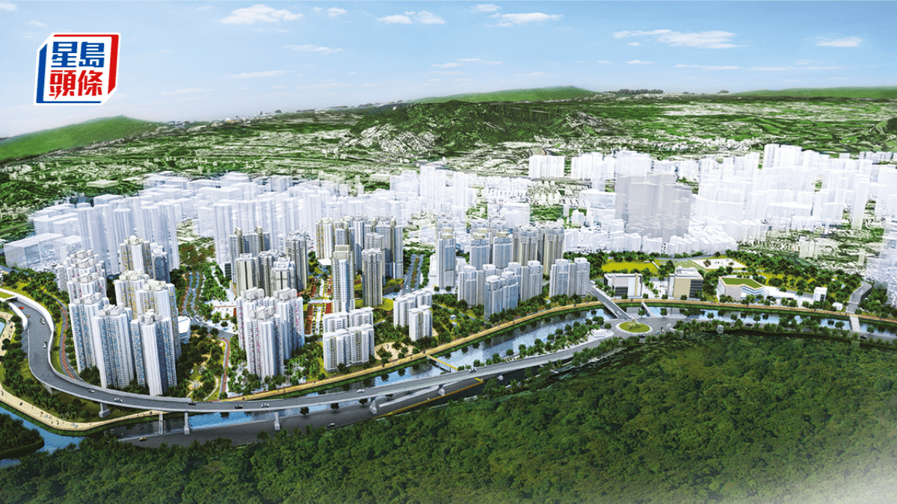

香港簡訊
香港市場動態日報
香港簡訊
2026年6月17日 · 海外與投資部編制
本期匯總就業與金融政策、地產市場與北都發展三大主線，共精選 14 條市場動態。
香港簡訊
本期目錄覆蓋就業與金價、地產供應與北都立法與土地三條決策主線
香港簡訊
SECTION
金融與經濟
本節 4 條
香港簡訊
金融與經濟 · 1/4
港失業率維持3.7% 14萬人丟職
香港簡訊
金融與經濟 · 2/4
近半央行擬一年內買金 歷來最踴躍金價高位回調25% WGC：提供吸納良機
香港簡訊
金融與經濟 · 3/4
夏寶龍訪港｜夏寶龍視察新皇崗口岸 鄧炳強介紹落實「一地兩檢」本地立法準備工作
香港簡訊
金融與經濟 · 4/4
立法會：署理財經事務及庫務局局長動議二讀《2026年銀行業法例（雜項修訂）條例草案》發言全文（只有中文）
香港簡訊
SECTION
建築與地產
本節 5 條
香港簡訊
建築與地產 · 1/5
何永賢：構建健康「房屋階梯」 助圓置業夢
香港簡訊
建築與地產 · 2/5
香檳大廈申寬地積比敗 恒地提覆核
香港簡訊
建築與地產 · 3/5
潤發倉庫重建 市區罕有大型私宅
香港簡訊
建築與地產 · 4/5
一手豪宅旺 應天三日銷3伙新盤半月買賣減 大額成交逆增六成
香港簡訊
建築與地產 · 5/5
藍地項目減單位18% 泛海擬申建276伙
香港簡訊
SECTION
北都專題
本節 5 條
香港簡訊
北都專題 · 1/5
夏寶龍高度關注港創科發展：抓「十五五」機遇 打造國際創科中心
香港簡訊
北都專題 · 2/5
北都專屬法例草案下周提交立法會 甯漢豪：授權特首就與廣東省協作範疇訂立附屬法例
香港簡訊
北都專題 · 3/5
北都21幅住宅地申寬高限 建2.23萬伙
土木工程拓展署最新向城規會「一口氣」申請放寬古洞北及粉嶺北合共21幅住宅地高度限制，包括粉嶺北8幅及古洞北13幅，高限增加4.55%至18.75%，涉及22380伙。
根據2022年獲批的規劃許可，該21幅用地原本容許的建築高度介乎(主水平基準以上．下同)80米至144.14米，最新放寬至85米至155米，幅度介乎4.55%至18.75%，而較大綱圖原有高限則高出6.25%至37.5%。
土拓署指，為降低建造成本並加快房屋發展，行政長官於2025年施政報告中宣布私人發展項目停車場總樓面面積的優化措施，容許地面不多於兩層停車場的總樓面面積獲全數豁免，同時取消興建地庫停車場作為豁免條件的強制要求。政府亦繼續鼓勵業界更廣泛採用「組裝合成」建築法，以縮短建造時間、加快整體房屋供應、減少人手需求和提升工地安全。


香港簡訊
北都專題 · 4/5
北都私宅地申放寬高限
香港簡訊
北都專題 · 5/5
財團再就文錦渡邊境地皮申建創科產業園 住宅伙數削3成至3016伙
香港簡訊
END
完
2026年6月17日 · 海外與投資部